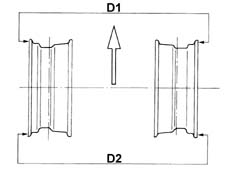

WHEEL GEOMETRY
- Path
- Technical Data > PROJECT DESCRIPTION AND SPECIFICATIONS > FRONT SUSPENSION > WHEEL GEOMETRY
- Kind
- technical data / specifications
- Applies to
- all engines; all production periods
- Interactive page
- https://sloeber94.github.io/elrnDB-aGt/en/#/125000056
Applies to: all engines; all production periods
1.8 T.SPARK | 2.0 JTS | 3.2 V6 | 1.9-JTD 16v | |
|---|---|---|---|---|
Camber | -0°39’ ± 20’ | - 0°39' ± 20' | -0°24' ± 20' | - 0°39' ± 20' |
Caster | 3°55’ ± 30’ | 3°55' ± 30' | 4°6' ± 30' | 3°55' ± 30' |
Toe in (d2-d1) | -1 ± 0.6 mm (*) (-9’ ± 5’) | -1 ± 0.6 mm (*) (-9’ ± 5’) | -2.4 ± 0.6 mm (*) (-22’ ± 5’) | -1 ± 0.6 mm (*) (-9’ ± 5’) |
